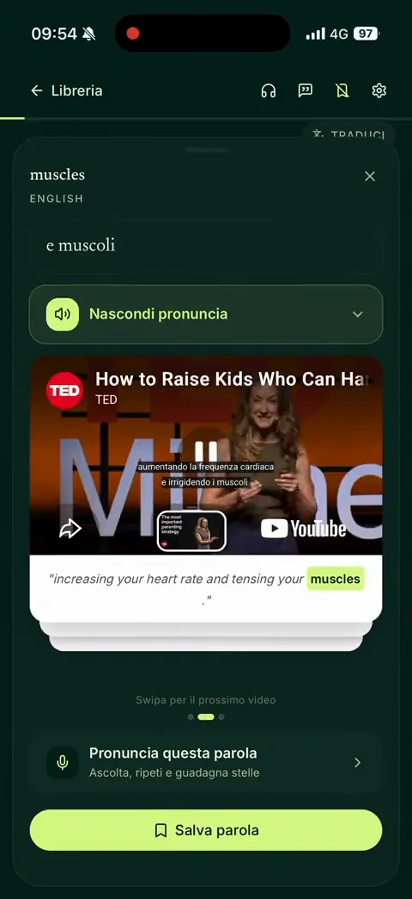
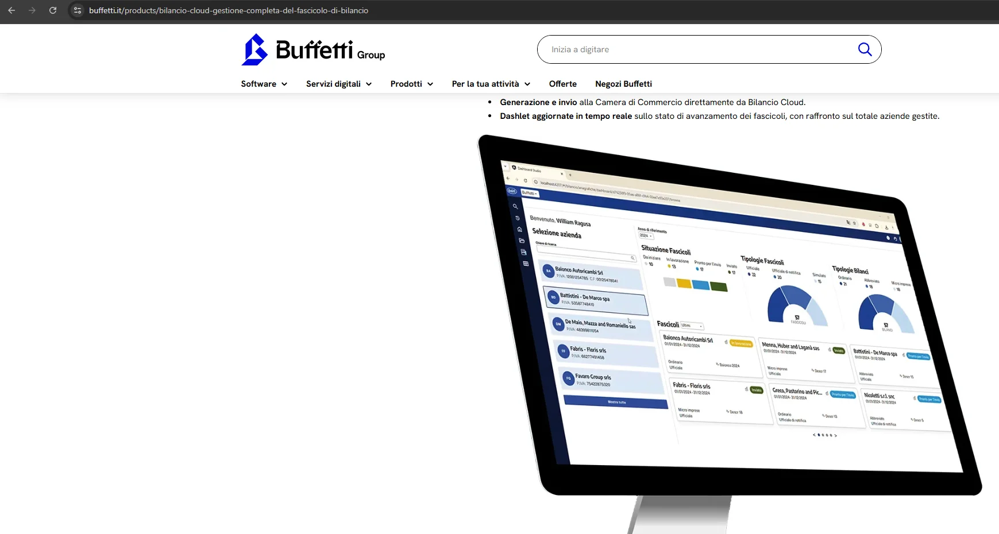

William
Ragusa
Sviluppatore full stack a Catania. Costruisco siti, web app e app iOS e Android, dall’idea alla pubblicazione.
Dal 2022 sviluppo software gestionale in Dylog, con .NET, Azure e Angular. In parallelo creo prodotti miei e su commissione.
 Laurea in Informatica, 2022
Laurea in Informatica, 2022
Dipartimento di Matematica e Informatica,
Università di Catania

Progetti personali in produzione
App mie, pubblicate e usate da persone vere. Le seguo dall’idea agli store, e continuo a migliorarle.
-

Su App Store, Android in arrivo
Eko
Tav. II, schermata dell’app
Il calendario della raccolta differenziata del tuo comune, con il promemoria la sera prima e il dizionario «dove lo butto?». Oggi copre circa 14 comuni e 258 rifiuti per Kalat Ambiente.
Ho curato il backend: un solo Worker Cloudflare con Hono e D1, gli script che estraggono i calendari dai PDF dei gestori e le notifiche. Interfaccia e app di Stefano Sallemi, frontend developer.
Hono, Cloudflare Workers, D1, React, Capacitor. Codice privato.
-

Online, app iOS e Android in arrivo
Vocablio
Tav. III, video demo
Impari l’inglese leggendo libri e articoli veri: tocchi una parola e vedi la traduzione, poi la senti pronunciata da un madrelingua in un video reale, già posizionato sulla frase giusta.
Prodotto mio, dall’idea alla pubblicazione. La ricerca nei video l’ho costruita da zero, con scraping e indicizzazione dei video YouTube.
Capacitor, Cloudflare Workers, Google Translate API. Codice privato.
Esperimenti
Prototipi e strumenti nati da una domanda precisa. Per ognuno: cosa volevo verificare, come l’ho fatto, cosa è successo.
| N. | Progetto | Ipotesi | Metodo | Risultato |
|---|---|---|---|---|
| E-01 | FernTav. IV, video demo | Un modello linguistico locale può usare un’API qualsiasi partendo solo dalla sua specifica OpenAPI. | Ollama, Mistral, Python, Streamlit. Open source | Funziona in demo. Open source con licenza MIT. |
Dettagli e linkE-01FernTav. IV
Carichi la specifica e chiedi a parole quello che ti serve. Il modello gira in locale e scrive la richiesta in JSON strutturato, che viene controllata sulla specifica prima della chiamata. |
||||
| E-02 | SignForgeTav. V, foto e video | Un’insegna LED si può generare da pochi parametri invece di disegnarla a mano. | OpenSCAD, Python, Flask. Codice privato | Lo uso per produrre le insegne che stampo. |
Dettagli e linkE-02SignForgeTav. V
Disegnare ogni insegna a mano richiedeva ore. Ora un solo fattore di scala, k = altezza / 50, adatta tutto il modello: le insegne da 3 a 30 cm escono stampabili. |
||||
| E-03 | mdreaderTav. VI, schermata | Un lettore Markdown completo può stare in un solo file HTML, senza server e senza installare niente. | marked, DOMPurify, KaTeX, Mermaid. Open source | Online e open source. |
Dettagli e linkE-03mdreaderTav. VI
Leggi e modifichi Markdown nel browser, con formule e diagrammi. Uno script Node impacchetta tutto in un unico file, che esporta in .md, HTML, testo per Word e Outlook e PDF. |
||||
| E-04 | Maps ScraperTav. VII, scelte tecniche | Una ricerca su Google Maps può diventare un Excel di attività, senza copiare a mano. | Estensione Chrome, SheetJS. Codice privato | La uso per trovare clienti e proporre partnership. |
Dettagli e linkE-04Maps ScraperTav. VII
Apri la Tav. VII, scelte tecniche Da una ricerca ottengo in pochi minuti un file con nome, categoria, valutazione, indirizzo, telefono, sito e orari di ogni attività, pronto da contattare. |
||||
| E-05 | BioDataTav. VIII, architettura | I dati dei sensori in campo, letti in tempo reale, possono avvisare quando una coltura è a rischio. | Node, Elasticsearch, Kibana, Docker. Open source | Tesi di laurea 2022, pensata per un’azienda agricola reale. |
Dettagli e linkE-05BioDataTav. VIII
Apri la Tav. VIII, architettura Per esempio, vento oltre 30 km/h in una serra di pomodori fa partire un avviso su Slack o via email. Progettato con AgrosNote per l’azienda agricola Colle d’Oro di Ispica (RG). |
||||
| E-06 | SentimenTitleTav. IX, pipeline | Un modello semplice può dire in tempo reale se il titolo di una notizia è positivo, neutro o negativo. | Kafka, Spark MLlib, Word2Vec. Open source | Il mio primo modello di machine learning: ogni titolo arriva in Kibana con classe e probabilità. |
Dettagli e linkE-06SentimenTitleTav. IX
Progetto universitario. I titoli di BBC News, The Verge e TechCrunch passano da NewsAPI a Kafka e Spark Streaming. Word2Vec trasforma le parole in vettori e una regressione logistica a tre classi, addestrata sui tweet annotati a mano di Sentiment140, ne stima il tono. |
||||
Archivio
Il mio primo gioco 3D in Unity, un sistema di code ordini con Spring Boot e RabbitMQ e altri esperimenti su github.com/rocketxx. Alcuni progetti sono open source, altri sono prodotti miei o lavori per clienti con codice privato: nella pagina di ognuno trovi comunque com’è fatto.
Lavori
Se hai un’attività, un’associazione o un’idea, seguo il progetto dall’inizio alla pubblicazione, e anche dopo.
-
In produzione
Freddo Pregiato
Tav. X, schermata del sito
Sito e catalogo per un negozio: cerchi per prodotto, codice o categoria, vedi le offerte e ordini su WhatsApp, senza un e-commerce complesso.
-
In corso
MARIS Onlus
Tav. XI, migrazione e nuovo sito
Nuovo sito per un’associazione. Anni di articoli, eventi e rassegna stampa sono già migrati dal vecchio WordPress; il nuovo sito arriva a breve.
Cosa posso fare per te
-
Siti web
Siti veloci, curati e facili da aggiornare, per attività, professionisti e associazioni.
Per esempio: MARIS Onlus, Freddo Pregiato
-
Web app e PWA
Gestionali, cataloghi, prenotazioni e dashboard. Si installano come app e funzionano anche offline.
-
App iOS e Android
Una sola base di codice per web, iPhone e Android, con notifiche, widget e pubblicazione sugli store.
-
Automazioni su misura
Estensioni per il browser, raccolta e migrazione di dati, integrazioni con API e assistenti AI.
Per esempio: Maps Scraper, Fern
-
Ascolto
Capiamo insieme cosa ti serve davvero, senza gergo tecnico.
-
Sviluppo
Lavoro per versioni intermedie, che puoi provare man mano, non solo alla fine.
-
Online, e dopo
Pubblicazione, dominio e hosting a costi contenuti, spesso nel piano gratuito di Cloudflare. Poi manutenzione.
Chi sono
Il mio stack principale è quello che uso ogni giorno al lavoro: .NET, C# e Azure. Nei progetti indipendenti sperimento il resto.
-
dal
.NET Software Developer
Dylog Italia, Gruppo Dylog Buffetti. Software gestionali per imprese, professionisti e organizzazioni.
Lavoro in due team, su contabilità e bilancio: sviluppo nuove funzionalità su .NET e Azure e mantengo i moduli esistenti, anche quelli che ho scritto io. Tra i lavori recenti: gestione documentale su Azure Storage, notifiche in tempo reale con Angular e SignalR, creazione e invio delle Pratiche di bilancio con le API di InfoCamere, autenticazione multi-tenant con Keycloak, estensioni del browser basate sull’AI, modulo Prima Nota e fatture elettroniche.
C#, ASP.NET Core, Entity Framework, Azure Storage, Azure SQL, Azure Service Bus, Angular, SignalR, Keycloak
-
in parallelo
Progetti indipendenti e clienti
Eko, Vocablio, MARIS Onlus, Freddo Pregiato
Ideo, sviluppo e pubblico applicazioni, dal design al backend. Eko è su App Store e Vocablio è online: girano entrambe su Cloudflare, che ho imparato da autodidatta. Per i clienti seguo tutto, dai requisiti alla messa in produzione.
React, TypeScript, Capacitor, Cloudflare Workers, D1, Hono
-
Laurea in Informatica
Dipartimento di Matematica e Informatica, Università di Catania
Tesi: BioData, stream processing per proteggere le colture con i sensori agricoli, sviluppato con AgrosNote. Durante il percorso anche SentimenTitle e un gioco 3D in Unity.
C#, C++, C, Java, Node.js, Kafka, Spark, Elasticsearch, Docker
-
prima
Diploma all’Istituto Tecnico Industriale

Bilancio Cloud su buffetti.it
Con cosa lavoro
- In Dylog, ogni giorno
-
È il mio lavoro quotidiano: sviluppo e mantengo software gestionale in produzione, per contabilità e bilancio. È qui che ho più esperienza: API in ASP.NET Core, accesso ai dati con Entity Framework, architetture cloud su Azure e notifiche in tempo reale con SignalR, con Angular sul frontend.
C#, .NET e .NET Framework, ASP.NET Core, Entity Framework, API REST, SignalR, Azure Storage, Azure SQL, Azure Service Bus, Angular, Keycloak - Cloudflare, da autodidatta
- Workers, D1, Static Assets, Cron Triggers, WAF e rate limiting
- Frontend e mobile
- React, TypeScript, Vite, Capacitor, PWA
- Backend
- Node.js, Hono, Express, Python, Flask, Java, Spring Boot
- Dati e AI
- SQLite, Elasticsearch, Kibana, Kafka, Spark, LangChain, Ollama
- Altro
- Docker, RabbitMQ, estensioni per Chrome, OpenSCAD, Arduino, Unity
Quando spengo il computer stampo in 3D (da lì è nato SignForge), costruisco circuiti, piccoli robot e droni con Arduino, e faccio volontariato con Damuni Versu, un’associazione di promozione sociale di Ramacca (CT): solidarietà, cultura ed eventi per la comunità.
Contatti
Hai un progetto o una posizione aperta? Scrivimi.
williamragusa@proton.mePer un preventivo raccontami in poche righe cosa ti serve: ti dirò come lo farei, in quanto tempo e con quale costo.